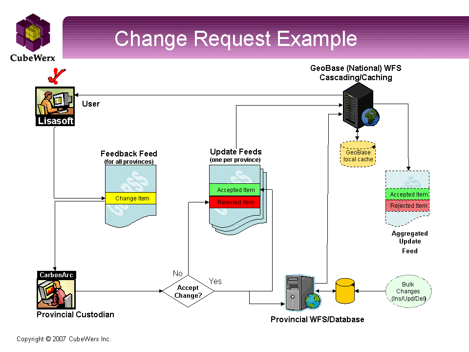

About the CGDI Interoperablity Pilot
The Government of Canada, in partnership with the provinces, territories, universities and the private sector, is developing the Canadian Geospatial Data Infrastructure, or CGDI, to support decision makers. The CGDI is an interoperable, internet based network to support information sharing and decision making. This CGDI Interoperability Pilot project is based on a distributed CGDI architecture using standards-based products that allow immediate access to current data. This project shows how municipal, provincial and territorial authorities can update data and automatically make their up-to-date data available online in real time to those who need it, anywhere across Canada.
Browser clients by LISAsoft
- Geobase Discovery/Browse/Download
- Allows users to:
- search the GeoBase Catalog for map layers,
- search and zoom to a placename,
- build a map from catalog layers,
- save the map as an OWS Context document,
- save a layer as GML.
- User Feedback
- The Feedback Client allows users to suggest a feature change to a Province Database Custodian. The user can select a feature or suggest a new feature, sketch changes on a map, edit attributes, then post the suggestion to the Feedback Feed to be processed.
- Feedback Feed
- Allows Provence Data Custodians to monitor user update suggestions. Suggestions that have been processed can be viewed side-by-side with updates from the Update feed by users.
- Update Feed
- Allows users to view changes made to Provence databases.
- Emergency Management Event Feed
- Allows users to monitor emergency management events.
Workflow for a Change Request
Participants
About OGC
The OGC© is an international industry consortium of more than 350 companies, government agencies, research organizations, and universities participating in a consensus process to develop publicly available interface specifications. OpenGIS© Specifications support interoperable solutions that "geo-enable" the Web, wireless and location-based services, and mainstream IT. The specifications empower technology developers to make complex spatial information and services accessible and useful with all kinds of applications.
This Interoperablity Pilot has been developed in partnership with the OGC©.
Visit the OGC website at http://www.opengeospatial.org.
About LISAsoft
LISAsoft develops geospatial applications for the internet and mobile devices. LISAsoft adds value because:
- We future-proof our solutions by using Open Standards.
- We use, extend and support Open Source geospatial software, and are core developers of some.
- Built a web based Catalog client and GeoRSS Feed reader using Mapbuilder.
- Extented Geoserver to provide cascading WFS support.
- Contributed code back to Mapbuilder, Openlayers and Geotools, a core library of Geoserver.